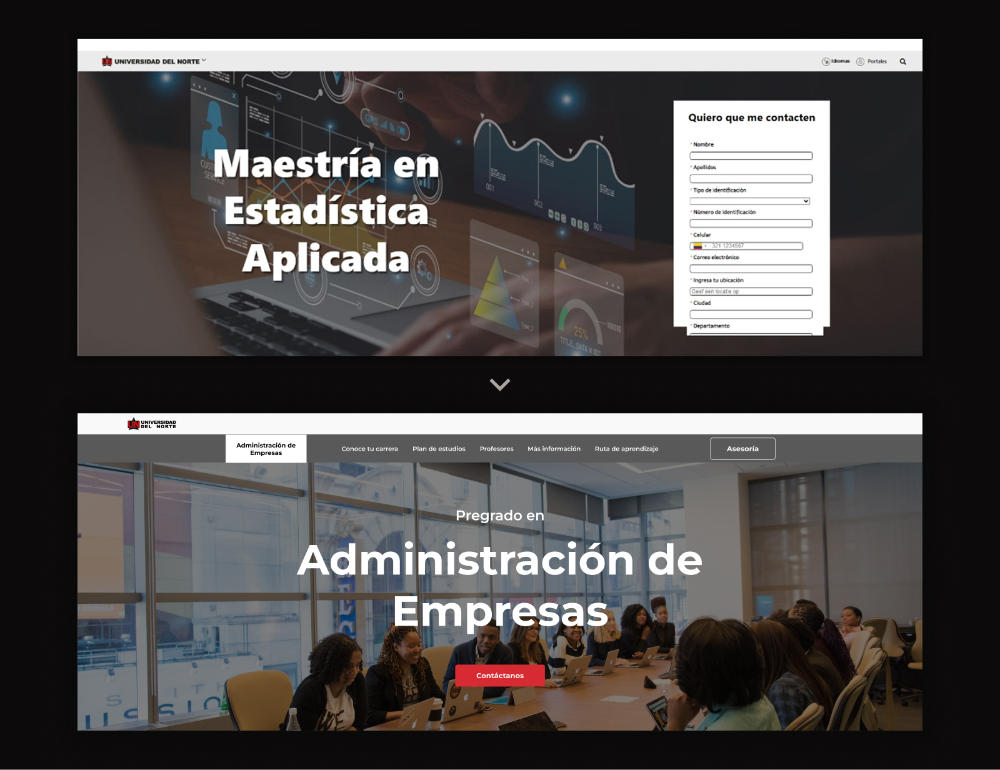
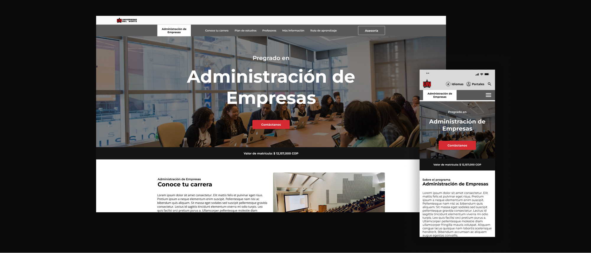
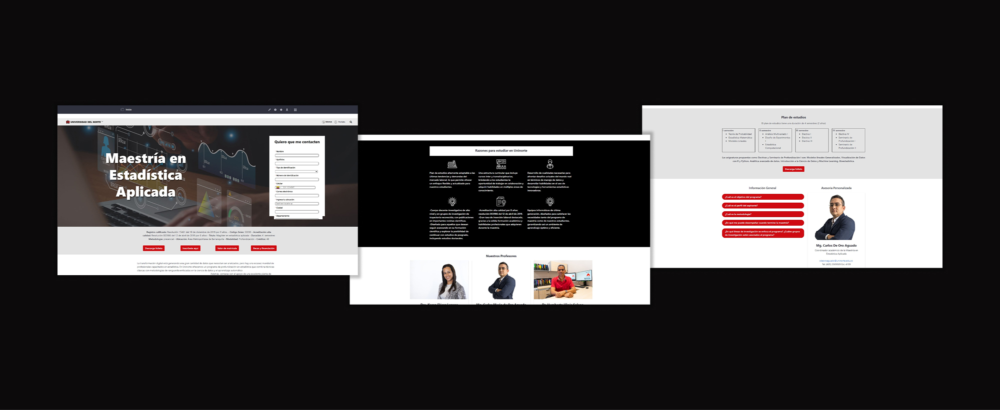
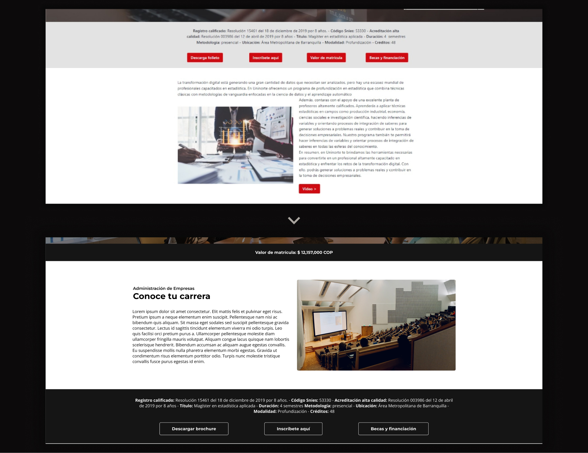
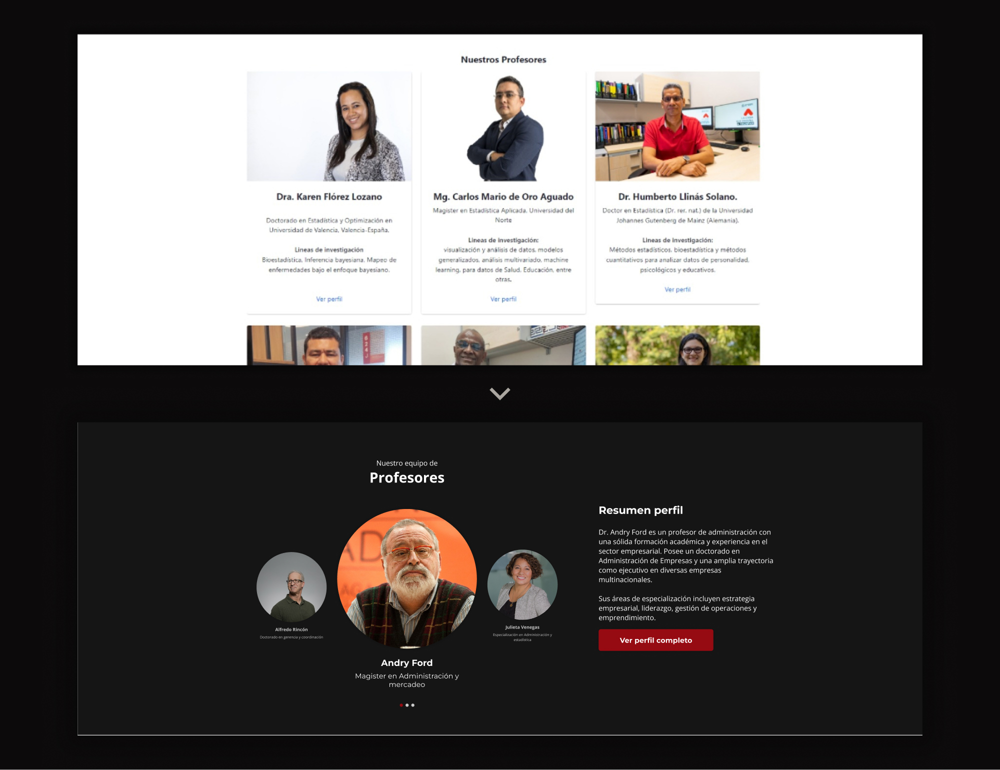
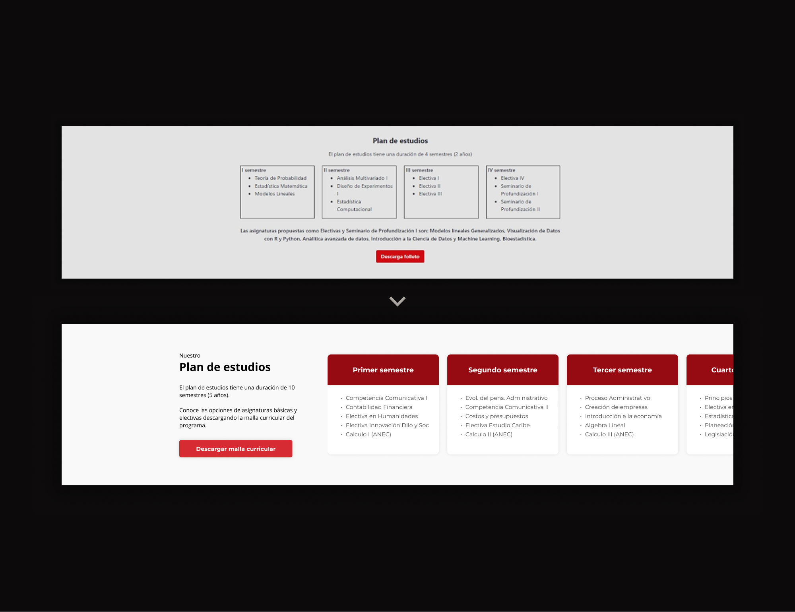
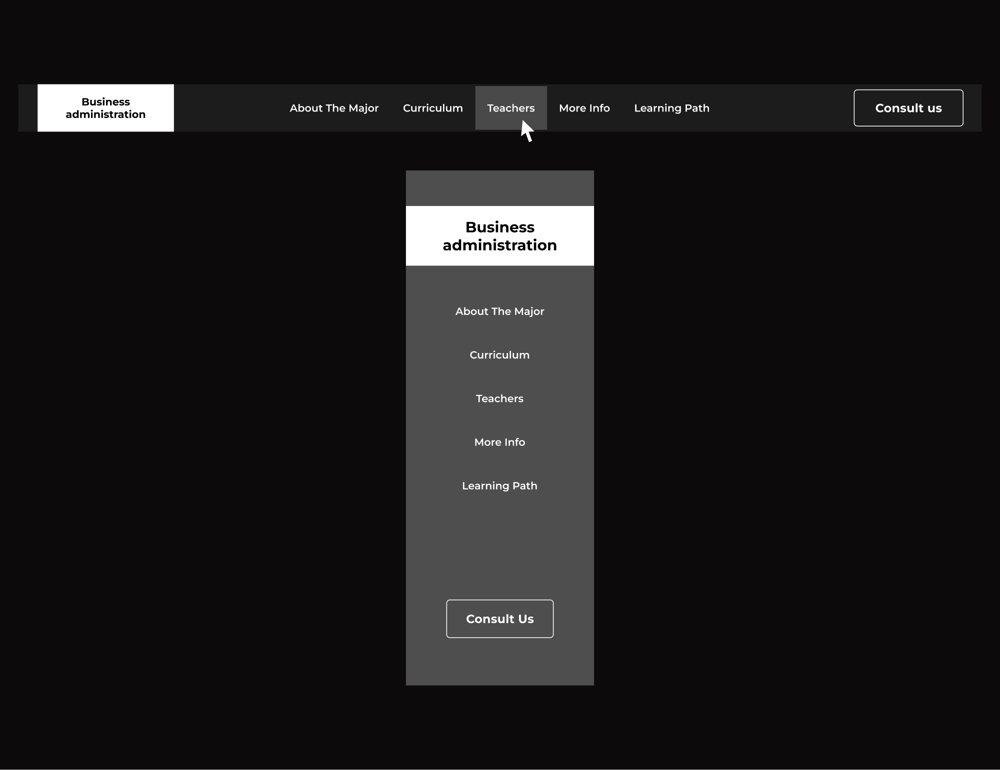
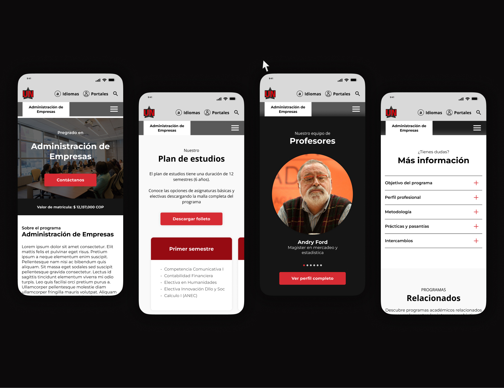

A
Hero simplification
The initial hero overwhelmed users with a long form. It was moved to the end, replacing it with a simple “Contact” CTA. Users first understand, then act.


Academic program pages at Universidad del Norte were built using Liferay, resulting in inconsistent structures across different programs.
Each page varied in layout, hierarchy, and content organization, making it difficult for users to navigate and compare programs effectively. The goal was to design a scalable and standardized system that could work across all undergraduate and graduate programs, while adapting to Liferay’s technical constraints.
Users struggled to quickly find key information due to poor hierarchy, excessive content, and inconsistent layouts.
“We needed a clearer and more consistent way to present our programs.”
— Communication department
Users were exposed to a long form immediately, creating friction and cognitive overload.
Multiple primary buttons competed for attention, making decision-making harder.
Key information such as pricing was not easily accessible.
Key information such as pricing was not easily accessible.
Different icon styles and UI patterns created a fragmented experience.

Research showed users primarily look for: Pricing, curriculum, professors and financing
Analysis revealed issues in hierarchy, navigation, and excessive scrolling.
A modular layout system was defined to standardize all program pages.
All solutions were adapted to Liferay limitations.
User testing compared the previous vs redesigned experience.
The initial hero overwhelmed users with a long form. It was moved to the end, replacing it with a simple “Contact” CTA. Users first understand, then act.

Multiple primary buttons created confusion. These were reduced to secondary actions, while pricing was shown upfront. Less noise, faster decisions.

The original grid created long vertical scrolling. It was redesigned as a horizontal carousel with quick summaries and access to full profiles. More scannable, less space.

The curriculum didn’t scale well and felt disconnected from the rest of the page. It was redesigned using semester-based cards with horizontal navigation and a download option. Flexible, scalable, and easier to explore.

A section-based navigation was added to allow users to jump between key areas without excessive scrolling. Faster access to information.

The entire system was designed to work seamlessly across devices, prioritizing mobile usability and component adaptability. Consistent experience everywhere.

The redesign created a clearer and more efficient experience, allowing users to access key information faster and with less effort
This project taught me how to organize large amounts of content around real user priorities.
Instead of focusing on visual changes, most decisions were about structure, hierarchy, and clarity. The challenge was not adding more, but removing friction. Working within Liferay also pushed me to design more systematically, ensuring that every solution was both usable and scalable.